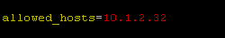

Nagios Network Monitör Uygulaması -2
Merhaba geçen sayımızda başladığımız Nagios Monitoring Sistemi yazımıza 2. bölümüyle devam ediyoruz.

Geçen sayıdaki yazımızda Nagios’u kurup çalışma mantığına bakmıştık. Bu sayımızda ise izlemek istediğimiz cihazları Nagios’a ekleyeceğiz. “Bunu yapmak için neler yapmak gerekir?” sorusuna cevaplar arayarak yazımızı sürdüreceğiz ve Nagios yazımız tamamlanmış olacak.
Geçen ay kurduğumuz Nagios uygulamamıza web arayüzünden aşağıdaki şekilde ulaşabiliriz.
http://nagios-sunucu_ap-adresi/nagios/

Şu an için Nagios sunucumuzda izlediğimiz herhangi bir sunucumuz yok. Bu yazımızda Windows ve Linux sunucularımızı Nagios’a ekleyip izleme başlatacağız.
Nagios istenilen cihazda izleme yapabilmesi için karşı tarafta bir agent kurulmasını ister. Windows Sistemler için NsClient++ uygulamasını kurarak Nagios ile bağlantıyı sağlayacağız.
İlk önce aşağıdaki adresten terminal uygulamamızı indiriyoruz. Bu bağlantıda sisteminize uygun olan sürümü (32Bit-64Bit)seçebilirsiniz.
http://sourceforge.net/projects/nscplus/files/nscplus/NSClient%2B%2B%200.4.1/

Kurulumda önemlli olan nokta yan gördüğümüz ekran. Burada Allowed Hosts alanına Nagios sunucumuzun IP adresini giriyoruz.
Böylece NsClient yüklü sunucu üzerinde Nagios sunucumuz izinli oluyor ve izleme yapabilir durumda olabiliyor.
Bu kurulumla izlenecek cihaz tarafında gereklilikleri yapmış olduk. Şimdi Nagios tarafında ayarlara bakalım. Nagios kurulumu ile beraber gelen .cfg dosyalarından windows.cfg dosyası, Windows sunucular için bize bir şablon dosya görevini görebilir. Bu dosyayı örnek alarak Windows sunucumuza uyarlayabiliriz.
Nagios sunucumuzda /etc/nagios/object klasörünün içine giriyoruz. Object klasörü içinde windows.cfg dosyasını bulup bir kopyasını çıkartabiliriz. Bu kopya dosyamızı Windows sunucumuz için kullanacağız. Kopyalamak için;
/etc/nagios/object klasörü içindeyken;
cp windows.cfg windowsServer-1.cfg
Şimdi yeni dosyamız windowsServer-1.cfg dosyamızı editleyelim. Editleme için vim ya da nano’yu kulanabiliriz.
/etc/nagios/object klasörü içindeyken
vim windowsServer-1.cfg veya nano windowsServer-1.cfg
Dosyayı açtığımızda 3 önemli tanımlama alanından oluştuğunu göreceğiz.
Define_Host
Define_HostGroup
Define_Services
Define_Host alanında sunucumuzun erişim bilgilerini tanımlıyoruz. Aşağıda ekran görüntüsünü görmekteyiz.

İzleyeceğimiz Windows sunucumuzun host_name tanımını ve ip_adresi tanımı yaptık.
Ardından Host_Group alanında ise bu hostumuzu hangi grupta tutacağımızı belirtiyoruz. Nagios arayüzünde izlediğimiz cihazları grup bazlı ayırabilir ve monitörleyebiliriz.
Önemli bir detay olarak belirtmekte fayda var. Bir Host_Group sadece bir .cfg dosyasında belirtilir. Birden fazla olması durumunda Nagios servisi başlatılırken hata alırız. Sonuç olarak Host_Group ‘u tanımlıyoruz ve bu gruba giren diğer cihazları da define_host tarafındaki use alanına tanımlıyoruz. Aşağıdaki çıktıda gördüğümüz gibi Host_Group tanımlamasını yaptık.

Son olarak bu cihaz üzerinde kontrol edeceğimiz servislerin tanımları var.

Servisler kısmında kurulumla birlikte gelen .cfg dosyasında toplam 7 adet servis bulunmaktadır. 1 tanesi monitörlenen makineye kurulan uygulamanın versiyonunu kontrol eder. Diğerleri ise mesela ekranda gördüğümüz üzere Uptime süresi, Cpu kullanımı ve devamında ram, disk kullanımını izleyen servisler vardır. Bunları kaldırabileceğimiz gibi eklemeler de yapabiliriz.
Monitörlenen makinenin .cfg dosyasında değineceğimiz temel başlıklar bu kadar. Böylece .cfg dosyasıyla işimiz tamamlanmış oldu. Şimdi Nagios’a bu cihazın .cfg dosyasını göstererek izleme işlemini başlatabiliriz. Bunun için /etc/nagios klasöründeki nagios.cfg dosyasına aşağıdaki gibi bir girdi yapmamız gerekir.

Böylece sunucumuza göre uyarladığımız .cfg dosyamızın yolunu Nagios’a da bildirmiş olduk. Artık Nagios ilgili sunucumuzu monitör edecektir. Arayüzde Host alanında görebiliriz.
Linux sunucumuz için de aynı Windows sunucumuzda olduğu gibi Nagios bir agent uygulama istiyor. Linux sunucular için NRPE uygulamasını kullanacağız. Bu uygulama sayesinde Nagios sunucumuz üzerinde izleme yapabilecek.
Uygulamayı yüklemek için terminal penceresinden
yum install nagios-nrpe
komutunu vermemiz gerekiyor. *Bu komut Centos sistemler için geçerlidir. Debian için de
apt-get install nagios-nrpe
dememiz gerekiyor.
Bu arada rpmforge veya epel repolarının sistemimize yüklü olduğunu varsayıyoruz. Aksi hâlde kurulumla gelen repolarda bu uygulamayı bulamayız.
Kurulum tamamlandıktan sonra /etc/nagios klasörü altında nrpe.cfg dosyasını bulabiliriz. Bu dosyayı editleyip allowed_hosts alanının karşısına Nagios sunucumuzun ip adresini yazıyoruz.

Ardından nrpe servisini yeniden başlatarak (/etc/init.d/nrpe restart) monitörlenecek sunucumuz tarafında işlemlerimizi tamamlıyoruz.
Şimdi Nagios tarafında yapacaklarımıza bakalım. Tıpkı Windows sunucumuz için yaptığımız gibi Linux sunucumuz için de bir .cfg dosyası oluşturacağız. Bunun için örnek dosya olarak /etc/nagios/object klasörü altındaki localhost.cfg dosyayı kullanacağız. Localhost.cfg dosyası Linux sunucular için şablon dosya olarak kullanılabilir. Bu dosyayı kendi sunucumuza göre uyarlayacağız.
Yine .cfg dosyasında Define_Host, Define_HostGroup, Define_Services alanlarını göreceğiz.
Define_Host alanına erişim bilgilerimizi HostGroup alanına Linux sunucumuzu ekleyeceğimiz grubu tanımlayacağız. Yine Windows sunucumuzda yaptığımız gibi hareket ediyoruz.
Aşağıdaki çıktıda da göreceğimiz gibi use alanına grubu, host_name alanına makine adını, alias alanına arayüzdeki görünecek adını ve address alanına da sunucumuzun IP adresini yazıyoruz.

Host_Group alanını tekrar olmaması açısından Windows sunucularla aynı olduğu için geçip Define_service alanından bir çıktıyı inceleyelim.

Total_Processes, Swap_Usage ve SSH servislerinin tanımını görmekteyiz. Bu tanımlar sayesinde arayüzde ilgili servisleri monitör edebileceğiz. İstediklerimizi kaldırabilir takip etmek istediğimiz servis için de tabii ki eklemeler yapabiliriz.
Son olarak Nagios tarafında /etc/nagios/nagios.cfg dosyasına Linux sunucumuz için uyarladığımız dosyamızı tanımlıyor ve Linux sunucumuz için de izlemeyi başlatıyoruz. Tabii değişikliklerin etkin olması için Nagios servisini tekrar başlatmamız gerekiyor. /etc/init.d/nagios restart

Tüm bu işlemlerden sonra http://nagios-sunucu_ap-adresi/nagios/ şeklindeki bağlantımızı kullanarak Nagios arayüzüne ulaşabiliriz. İşte eklediğimiz sunucularımız da monitör edilmekte.

Nagios’ta temel olarak yaptığımız işlemlere değinip 2 çeşit sunucumuzu da ekledik.
Görüşmek üzere.